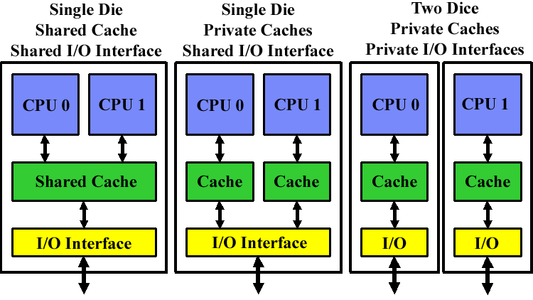

flowchart TB
subgraph CPU["CPU Chip"]
RF[Register File] <--> ALU[ALU]
RF <--> BI[Bus Interface]
ALU <--> BI
end
BI <--> SB[System Bus]
SB <--> IOB[I/O Bridge]
IOB <--> MB[(Main Memory)]
IOB <--> Bus[I/O Bus]
Bus --> USB[USB Controller]
Bus --> GPU[Graphics Adapter]
Bus --> Disk[Disk Controller]
CS F422/U422: Parallel Computing
Multi-Core Architectures
Lecture 5-6
|
2026-08-13
Dr. Apurba Das
BITS Pilani, Hyderabad Campus
Single-Core Computer Architecture
- Classical Von Neumann Model:
- Single central processing unit connected via system bus to memory and I/O bridge.
- Key Internal Subsystems:
- ALU: Arithmetic & Logic computation units.
- Register File: Fast, localized register storage.
- Bus Interface: Coordinates transactions with external memory and peripherals.
- I/O & Memory Interconnect:
- Connected to Memory Bus, Graphics Adapter, USB Controller, Disk Controller, and Expansion Slots.
Chip Multi-Processing (CMP) Approaches

Figure: Three CMP Implementations.
Source: David Kanter, “Chip Multi-Processing: A Method to the Madness”, Real World Tech (2005).
- Lowest Level of Integration Classification:
- Shared Cache CMP (Single Die):
- Cores share on-die L2/L3 cache and unified I/O interface.
- Advantage: Lowest inter-core latency; dynamic cache allocation between cores; simpler socket interconnect.
- Examples: IBM POWER4/5, Sun Niagara, Intel Core 2.
- Shared Interface CMP (Single Die):
- Cores have private caches but share on-die memory controller/I/O interface (e.g., AMD Opteron, Athlon 64 X2).
- Shared Package CMP (Multi-Chip Module / Two Dice):
- Two distinct single-core dice placed on a common substrate (e.g., Intel Pentium D / Presler).
- Shared Cache CMP (Single Die):
Parallel Execution vs. Time-Slicing
Hardware Parallelism (Across Cores)
- Multiple threads execute truly in parallel at the exact same physical clock cycle.
- Thread 1 \(\rightarrow\) Core 1
- Thread 2 \(\rightarrow\) Core 2
- Thread 3 \(\rightarrow\) Core 3
- Thread 4 \(\rightarrow\) Core 4
Time-Slicing (Within Each Core)
- Within any single core, multiple threads are time-sliced by the OS scheduler.
- Each individual core behaves like a classical uniprocessor for its assigned threads.
- Enables high multi-programming concurrency.
Operating System Perspective: The OS perceives each core as a separate, distinct logical processor and schedules runnable threads/processes across available cores.
Why Multi-Core? The Power & Scaling Wall
- Limits of Frequency Scaling:
- Extremely difficult to push single-core clock frequencies higher without thermal runaway.
- Pitfalls of Deeply Pipelined Circuits:
- Heat Dissipation: Exponential power/cooling density.
- Speed-of-Light Delays: Signal propagation delay across large monolithic dies.
- Design & Verification: Exponential logic complexity requiring massive engineering teams.
- Datacenter Costs: Server farms requiring massive cooling infrastructure.
- Application Evolution:
- Modern server, client, and scientific applications are inherently multi-threaded.
- The Inevitable Trend:
- Modern computer architecture has shifted from extracting ILP from a single core to maximizing chip-wide Thread-Level Parallelism (TLP).
Instruction-Level vs. Thread-Level Parallelism
Instruction-Level Parallelism (ILP)
- Parallelism at the machine-instruction level within a single thread.
- Mechanisms:
- Dynamic instruction re-ordering (Out-of-Order).
- Deep pipelining & superscalar issue.
- Aggressive branch prediction & speculative execution.
- Diminishing Returns: Quadratic increase in issue/renaming hardware logic area.
Thread-Level Parallelism (TLP)
- Parallelism at a coarser granularity across independent threads or processes.
- Examples:
- Web & Database servers handling concurrent clients.
- Video games with separate AI, physics, and rendering threads.
- CMP Advantage:
- Explicitly exploits abundant TLP across multiple simple, power-efficient cores.
General Multiprocessor Context & Memory Models
Multiprocessor Taxonomies
- SIMD (Single Instruction, Multiple Data):
- Same instruction applied across vector data (e.g., GPUs, Vector units).
- MIMD (Multiple Instruction, Multiple Data):
- Distinct cores execute different instruction streams on different data.
- Multi-Core is a Shared-Memory MIMD:
- All cores reside on the same chip and share a unified physical memory address space.
Multiprocessor Memory Types
- Shared Memory:
- All processors access a single, common global address space.
- Found in Symmetric Multiprocessors (SMP) & CMP.
- Distributed Memory:
- Each processor has dedicated local memory.
- Processors communicate via explicit message-passing networks (e.g., Clusters, Supercomputers).
Applications Benefiting from Multi-Core
Server & Enterprise Workloads
- Database Servers: Concurrently processing independent queries and transactions.
- Web & E-Commerce Servers: Handling thousands of simultaneous client sessions.
- Compilers: Parallel compilation units and link-time optimizations.
Desktop & Technical Workloads
- Multimedia & CAD/CAM: Video encoding, 3D mesh rendering, ray tracing.
- Multi-Tasking Workloads:
- Photo editing while recording live TV streams.
- Downloading software while running background anti-virus scanning.
Rule of Thumb: “Anything that can be threaded today maps efficiently to multi-core architectures.” (Though non-parallelizable sequential tasks remain Amdahl-limited).
Simultaneous Multithreading (SMT)
- The Problem in Superscalar Pipelines:
- Long floating-point/integer operations or off-chip memory latencies stall the pipeline.
- Valuable execution units sit idle and unused.
- SMT Solution:
- Permits multiple independent threads to execute simultaneously on the SAME physical core.
- Threads share execution units cycle-by-cycle (“weaving” threads together).
flowchart LR
A[Instruction Fetch / Decoder] --> B[Scheduler & Issue Queues]
B --> INT[Integer Units: Thread 2]
B --> FP[Floating Point Units: Thread 1]
INT --> C[L1 Cache / D-TLB]
FP --> C
SMT vs. Multi-Core: Structural Difference
Simultaneous Multithreading (SMT)
- Single Core, Shared Resources:
- Only one physical copy of execution units (ALU, FP, caches).
- Functional Unit Contention:
- Two threads cannot simultaneously use the same functional unit (e.g., single Integer unit).
- Performance:
- Not a “true” parallel processor; typically provides up to ~20-30% throughput gain.
Multi-Core (CMP)
- Replicated Execution Hardware:
- Each core has its own dedicated integer units, FP units, and L1 caches.
- True Concurrency:
- Two threads can simultaneously execute integer operations without any resource contention.
- Linear Scaling: Near-linear throughput scaling for thread-rich workloads.
Combining Multi-Core and SMT
Processors can combine both CMP and SMT paradigms into a hybrid architecture:
| Architecture Combination | Description | Example |
|---|---|---|
| Single-core, non-SMT | Standard classical uniprocessor | Pentium III, early Athlon |
| Single-core, with SMT | 1 physical core executing 2 threads | Pentium 4 (Hyper-Threading) |
| Multi-core, non-SMT | Multiple independent cores, 1 thread/core | Core 2 Duo, Core 2 Quad |
| Multi-core, with SMT | Multiple cores, each running multiple threads | Intel Core i7 / Xeon, AMD Zen |
- Intel Hyper-Threading: Intel’s proprietary branding for SMT (typically 2, 4, or 8 simultaneous threads per physical core).
- Dual-Core SMT: 2 physical cores \(\times\) 2 threads/core = 4 concurrent threads.
Memory Hierarchy in Multi-Core Systems
SMT-Only Systems
- All threads share the entire cache hierarchy (L1, L2) and main memory.
- High cache contention among active threads.
Multi-Core (CMP) Systems
- L1 Caches: Typically private to each core for ultra-fast, single-cycle access.
- L2 Caches:
- Shared L2: Facilitates inter-core communication and dynamic capacity allocation.
- Private L2: Maximizes isolation and reduces cross-core cache interference.
- Main Memory: Always shared across all cores.
Common Architectural Layouts
- Private L1 + Shared L2:
- Dual-Core Intel Xeon (“Fish” machines).
- Private L1 + Private L2:
- AMD Opteron, AMD Athlon 64 X2, Intel Pentium D.
- Private L1 + Private L2 + Shared L3:
- Intel Itanium 2, modern Core i7/i9, AMD Ryzen/EPYC.
Trade-offs: Private vs. Shared Caches
Advantages of Private Caches
- Locality & Latency:
- Positioned directly adjacent to the core; shorter wire delays and lower access latency.
- Contention Elimination:
- Accesses from other cores do not create bandwidth bottlenecks or bank conflicts.
Advantages of Shared Caches
- Inter-Thread Sharing:
- Threads running on different cores can share read-only data without duplication.
- Dynamic Capacity Utilization:
- If a single high-performance thread is active, it can utilize the entire shared cache capacity.
The Resulting Challenge: When multiple cores maintain private caches containing copies of shared memory addresses, we face the Cache Coherence Problem.
The Cache Coherence Problem: Scenario
Let variable x initially reside in Main Memory with value 15213:
sequenceDiagram
autonumber
participant C1 as Core 1 (Private Cache)
participant C2 as Core 2 (Private Cache)
participant MM as Main Memory (x = 15213)
C1->>MM: Read x
Note over C1: Cache 1: x = 15213
C2->>MM: Read x
Note over C2: Cache 2: x = 15213
rect rgb(255, 230, 230)
C1->>C1: Write x = 21660
C1->>MM: Write-Through: x = 21660
Note over C1: Cache 1: x = 21660 (Updated)
Note over MM: Memory: x = 21660
end
rect rgb(255, 200, 200)
C2->>C2: Read x
Note over C2: Stale Read! Cache 2 still has x = 15213!
end
Cache Coherence: Invalidation Protocol with Snooping
Key Concepts
- Snooping Mechanism:
- All cores continuously “snoop” (monitor) the shared inter-core bus for memory transactions.
- Invalidation Principle:
- When Core 1 writes to
x, it broadcasts an Invalidation Request across the bus. - All other cores seeing the request invalidate their local copy (\(x = \text{INVALID}\)).
- When Core 1 writes to
Resolving Cache Misses
- When Core 2 subsequent reads
x:- Detects a local Cache Miss (entry is marked Invalid).
- Issues a read request across the inter-core bus.
- Fetches the updated value (\(x = 21660\)) from Memory / Core 1 cache.
- Result: Monolithic memory consistency is preserved!
Invalidation vs. Update Protocols
Invalidation Protocol (Standard)
- Core writes \(\rightarrow\) Broadcasts invalidation signal.
- Other copies become Invalid.
- Efficiency: Multiple repeated writes to the same cache line only generate one invalidation on the first write.
- Generates significantly less bus traffic!
Update Protocol (Alternative)
- Core writes \(\rightarrow\) Broadcasts new data value over the bus.
- All other caches update their local value.
- Drawback: Every single write broadcasts new data, saturating inter-core bus bandwidth.
- Standard Coherence State Machines:
- MSI Protocol: Modified, Shared, Invalid.
- MESI Protocol: Modified, Exclusive, Shared, Invalid (avoids bus signals for private writes).
Programming Multi-Core & Thread Safety
- Parallel Workload Distribution:
- Programmers must divide work using threads or processes and write parallel algorithms.
- Thread Safety & Race Conditions:
- Preemptive context switching can occur at any time.
- Multi-core hardware introduces true simultaneous concurrency, exposing race conditions much faster than uniprocessors.
int counter = 0;
void thread1() {
int temp1 = counter; // Read
counter = temp1 + 1; // Write
}
void thread2() {
int temp2 = counter; // Read
counter = temp2 + 1; // Write
}- If interleaved without synchronization: both read
0, both write1\(\rightarrow\) finalcounter = 1(Lost Update!). - Synchronization primitives (mutexes, semaphores, atomics) are mandatory!
Processor Affinity: Soft vs. Hard Affinity
Process Migration Overhead
- When an OS migrates a thread to another core:
- CPU execution pipeline must be drained/restarted.
- Warm cache lines on the previous core are invalidated / missed on the new core.
- Soft Affinity:
- The OS scheduler natural bias to keep a thread running on the same core to preserve cache locality.
Hard Affinity
- The programmer explicitly prescribes the set of cores a thread is allowed to run on.
- Affinity Mask: A bit vector where each bit corresponds to a logical CPU core.
- When to Use Hard Affinity:
- Shared Data Structures: Pin communicating threads to the same core/socket to maximize shared cache hits.
- Real-Time Threads: Pin dedicated tasks (e.g., robot controllers) to a dedicated core to eliminate context switch jitter.
Affinity Masks & Linux Scheduler API
Affinity Mask Bit Vectors
- 4-Core System without SMT: \[\text{Mask: } [1, 1, 0, 1] \rightarrow \text{Allowed on Cores 0, 2, 3 (Disallowed on Core 1)}\]
- 4-Core System with 2-way SMT (8 Hyper-Threads):
- Separate bits represent each simultaneous thread slot per core.
- Mask
0x0Frestricts thread to Core 0 and Core 1.
Operating System View & Licensing Models
OS Monitoring Tools
- Windows Task Manager / Linux
htop:- Displays independent real-time CPU utilization graphs for each logical core / hyper-thread.
- Workload Balancing:
- Default affinity mask is all
1s (run on any core); the kernel dynamically balances skewed loads.
- Default affinity mask is all
Software Licensing Challenges
- Licensing Controversy:
- Should enterprise software vendors charge licenses per core or per chip (socket)?
- Industry Resolution:
- Major OS vendors (Microsoft Windows Server, Red Hat Enterprise Linux, SUSE) transitioned to per-socket or tiered per-core licensing structures.
Summary & Key Takeaways
- The Multi-Core Revolution: Driven by the physical limits of clock frequency scaling, heat dissipation, and wire delays in wide superscalars.
- CMP vs. SMT:
- CMP (Multi-Core): Replicates physical cores to deliver true hardware parallelism for Thread-Level Parallelism (TLP).
- SMT (Hyper-Threading): Shares single-core execution units to fill pipeline stalls during memory latencies.
- Memory & Coherence:
- Private L1 caches require hardware-enforced Invalidation Protocols with Snooping (MESI) to guarantee cache coherence.
- Software Implications:
- Concurrency requires explicit synchronization, thread safety, and intelligent core affinity management to maximize cache locality and throughput.
References & Recommended Reading
Seminal Research Papers
- The Case for a Single-Chip Multiprocessor (1996):
- K. Olukotun, B. A. Nayfeh, L. Hammond, K. Wilson, K. Chang. Proc. ASPLOS-VII, pp. 2–11, 1996.
- Introduced the foundational argument for CMP over wide superscalar ILP architectures.
- A Single-Chip Multiprocessor (1997):
- L. Hammond, B. A. Nayfeh, K. Olukotun. IEEE Computer, 30(9): 79–85, 1997.
- Comprehensive exploration of on-chip multiprocessors, cache hierarchies, and interconnects.
Multithreading & Course Texts
- Chip Multithreading: Opportunities and Challenges (2005):
- L. Spracklen and S. G. Abraham. Proc. HPCA-11, pp. 248–252, 2005.
- Design space and throughput tradeoffs in massive Chip Multithreading (CMT / Sun Niagara).
- Multi-Core Architectures Technical Notes (2007):
- Jernej Barbic. 15-213: Introduction to Computer Systems, Carnegie Mellon University (CMU), 2007.
- Foundational lecture notes on hardware SMT vs. CMP and OS affinity masks.

CS F422: Parallel Computing • BITS Pilani, Hyderabad Campus